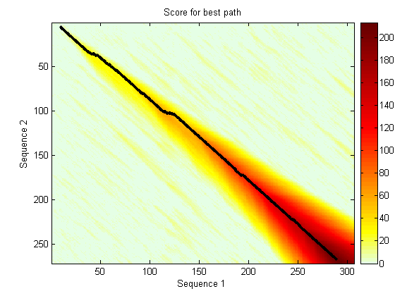

This demonstration illustrates the interoperability between MATLAB and Bioperl - passing arguments from MATLAB to Perl scripts and pulling BLAST search data back to MATLAB.
NOTE: Perl and the Bioperl modules must be installed to run the Perl scripts in this demonstration. See http://www.perl.com and http://bioperl.org/ for current release files and complete installation instructions.
Gleevec(tm) (STI571 or imatinib mesylate) was the first approved drug to specifically turn off the signal of a known cancer-causing protein. Initially approved to treat chronic myelogenous leukemia (CML), it is also effective for treatment of gastrointestinal stromal tumors (GIST).
% If you have access to the Internet, uncomment this line to learn more: % web('http://www.cancer.gov/clinicaltrials/digestpage/gleevec')
Research has identified several gene targets for Gleevec including: Proto-oncogene tyrosine-protein kinase ABL1 (NP_009297), Proto-oncogene tyrosine-protein kinase Kit (NP_000213), and Platelet-derived growth factor receptor alpha precursor (NP_006197).
target_ABL1 = 'NP_009297'; target_Kit = 'NP_000213'; target_PDGFRA = 'NP_006197';
You can load the sequence information for these proteins from local GenPept text files using genpeptread.
ABL1_seq = getfield(genpeptread('ABL1_gp.txt'), 'Sequence'); Kit_seq = getfield(genpeptread('Kit_gp.txt'), 'Sequence'); PDGFRA_seq = getfield(genpeptread('PDGFRA_gp.txt'), 'Sequence');
Alternatively, you can obtain protein information directly from the online GenPept database maintained by the National Center for Biotechnology Information (NCBI).
% Uncomment these lines to download data from NCBI: % ABL1_seq = getgenpept(target_ABL1, 'SequenceOnly', true); % Kit_seq = getgenpept(target_Kit, 'SequenceOnly', true); % PDGFRA_seq = getgenpept(target_PDGFRA, 'SequenceOnly', true);
The MATLAB whos command gives information about the size of these sequences.
whos ABL1_seq whos Kit_seq whos PDGFRA_seq
Name Size Bytes Class ABL1_seq 1x1148 2296 char array Grand total is 1148 elements using 2296 bytes Name Size Bytes Class Kit_seq 1x976 1952 char array Grand total is 976 elements using 1952 bytes Name Size Bytes Class PDGFRA_seq 1x1089 2178 char array Grand total is 1089 elements using 2178 bytes
From MATLAB, you can harness existing Bioperl modules to run a BLAST search on these sequences. MW_BLAST.pl is a Perl program based on the RemoteBlast Bioperl module. It reads sequences from FASTA files, so start by creating a FASTA file for each sequence.
fastawrite('ABL1.fa', 'ABL1 Proto-oncogene tyrosine-protein kinase (NP_009297)', ABL1_seq); fastawrite('Kit.fa', 'Kit Proto-oncogene tyrosine-protein kinase (NP_000213)', Kit_seq); fastawrite('PDGFRA.fa', 'PDGFRA alpha precursor (NP_006197)', PDGFRA_seq);
BLAST searches can take a long time to return results, and the Perl program MW_BLAST includes a repeating sleep state to await the report. Sample results have been included with this demo, but if you have an Internet connection and want to try running the BLAST search with the three sequences, uncomment the following command. MW_BLAST.pl saves the BLAST results in three files on your disk, ABL1.out, Kit.out and PDGFRA.out. The process can take 15 minutes or more.
% perl('MW_BLAST.pl','blastp','pdb','1e-10','ABL1.fa','Kit.fa','PDGFRA.fa');
Here is the Perl code for MW_BLAST:
type MW_BLAST.pl
#!/usr/bin/perl -w
use Bio::Tools::Run::RemoteBlast;
use strict;
# A sample Blast program based on the RemoteBlast.pm Bioperl module. Takes
# parameters for the BLAST search program, the database, and the expectation
# or E-value (defaults: blastp, pdb, 1e-10), followed by a list of FASTA files
# containing sequences to search.
# Copyright 2003-2004 The MathWorks, Inc.
# $Revision: 1.1 $ $Author: batserve $ $Date: 2004/01/24 09:20:29 $
# Retrieve arguments and set parameters
my $prog = shift @ARGV;
my $db = shift @ARGV;
my $e_val= shift @ARGV;
my @params = ('-prog' => $prog,
'-data' => $db,
'-expect' => $e_val,
'-readmethod' => 'SearchIO' );
# Create a remote BLAST factory
my $factory = Bio::Tools::Run::RemoteBlast->new(@params);
# Change a paramter in RemoteBlast
$Bio::Tools::Run::RemoteBlast::HEADER{'ENTREZ_QUERY'} = 'Homo sapiens [ORGN]';
# Remove a parameter from RemoteBlast
delete $Bio::Tools::Run::RemoteBlast::HEADER{'FILTER'};
# Submit each file
while ( defined($ARGV[0])) {
my $fa_file = shift @ARGV;
my $str = Bio::SeqIO->new(-file=>$fa_file, '-format' => 'fasta' );
my $r = $factory->submit_blast($fa_file);
# Wait for the reply and save the output file
while ( my @rids = $factory->each_rid ) {
foreach my $rid ( @rids ) {
my $rc = $factory->retrieve_blast($rid);
if( !ref($rc) ) {
if( $rc < 0 ) {
$factory->remove_rid($rid);
}
sleep 5;
} else {
my $result = $rc->next_result();
my $filename = $result->query_name()."\.out";
$factory->save_output($filename);
$factory->remove_rid($rid);
}
}
}
}
The next step is to parse the output reports and find scores >= 100. You can then identify hits found by more than one protein for further research, possibly identifying new targets for drug therapy.
protein_list = perl('MW_parse.pl', 'ABL1.out', 'Kit.out', 'PDGFRA.out')
protein_list = ABL1.out 1OPL, 999, 0.0, Chain A, Structural Basis For The Auto-Inhibition Of C-Abl... 1FMK, 360, 1e-100, Crystal Structure Of Human Tyrosine-Protein Kinase C-Src p... 1QCF, 358, 1e-100, Chain A, Crystal Structure Of Hck In Complex With A Src Fa... 1KSW, 357, 1e-100, Chain A, Structure Of Human C-Src Tyrosine Kinase (Thr338g... 1AD5, 344, 6e-96, Chain A, Src Family Kinase Hck-Amp-Pnp Complex pdb|1AD5|B ... 2ABL, 338, 5e-94, Sh3-Sh2 Domain Fragment Of Human Bcr-Abl Tyrosine Kinase 3LCK, 261, 9e-71, The Kinase Domain Of Human Lymphocyte Kinase (Lck), Activa... 1QPE, 261, 9e-71, Chain A, Structural Analysis Of The Lymphocyte-Specific Ki... 1QPD, 257, 1e-69, Chain A, Structural Analysis Of The Lymphocyte-Specific Ki... 1K2P, 243, 2e-65, Chain A, Crystal Structure Of Bruton's Tyrosine Kinase Dom... 1BYG, 232, 3e-62, Chain A, Kinase Domain Of Human C-Terminal Src Kinase (Csk... 1M7N, 220, 1e-58, Chain A, Crystal Structure Of Unactivated Apo Insulin-Like... 1JQH, 220, 2e-58, Chain A, Igf-1 Receptor Kinase Domain pdb|1JQH|B Chain B, ... 1P4O, 220, 2e-58, Chain A, Structure Of Apo Unactivated Igf-1r Kinase Domain... 1K3A, 217, 1e-57, Chain A, Structure Of The Insulin-Like Growth Factor 1 Rec... 1GJO, 216, 2e-57, Chain A, The Fgfr2 Tyrosine Kinase Domain 1FVR, 212, 3e-56, Chain A, Tie2 Kinase Domain pdb|1FVR|B Chain B, Tie2 Kinas... 1AB2, 207, 9e-55, Proto-Oncogene Tyrosine Kinase (E.C.2.7.1.112) (Src Homolo... 1IRK, 206, 2e-54, Insulin Receptor (Tyrosine Kinase Domain) Mutant With Cys ... 1I44, 206, 3e-54, Chain A, Crystallographic Studies Of An Activation Loop Mu... 1IR3, 205, 4e-54, Chain A, Phosphorylated Insulin Receptor Tyrosine Kinase I... 1FGK, 205, 4e-54, Chain A, Crystal Structure Of The Tyrosine Kinase Domain O... 1P14, 205, 6e-54, Chain A, Crystal Structure Of A Catalytic-Loop Mutant Of T... 1M14, 195, 4e-51, Chain A, Tyrosine Kinase Domain From Epidermal Growth Fact... 1PKG, 195, 4e-51, Chain A, Structure Of A C-Kit Kinase Product Complex pdb|1... 1VR2, 182, 3e-47, Chain A, Human Vascular Endothelial Growth Factor Receptor... 1JU5, 131, 8e-32, Chain C, Ternary Complex Of An Crk Sh2 Domain, Crk-Derived... 1BBZ, 126, 3e-30, Chain A, Crystal Structure Of The Abl-Sh3 Domain Complexed... 1AWO, 121, 1e-28, The Solution Nmr Structure Of Abl Sh3 And Its Relationship... 1BBZ, 121, 1e-28, Chain E, Crystal Structure Of The Abl-Sh3 Domain Complexed... 1G83, 115, 8e-27, Chain A, Crystal Structure Of Fyn Sh3-Sh2 pdb|1G83|B Chain... 1LCK, 108, 7e-25, Chain A, Sh3-Sh2 Domain Fragment Of Human P56-Lck Tyrosine... Kit.out 1PKG, 379, 1e-106, Chain A, Structure Of A C-Kit Kinase Product Complex pdb|1... 1VR2, 314, 6e-87, Chain A, Human Vascular Endothelial Growth Factor Receptor... 1GJO, 285, 3e-78, Chain A, The Fgfr2 Tyrosine Kinase Domain 1FGK, 274, 8e-75, Chain A, Crystal Structure Of The Tyrosine Kinase Domain O... 1OPL, 162, 4e-41, Chain A, Structural Basis For The Auto-Inhibition Of C-Abl... 1FVR, 160, 1e-40, Chain A, Tie2 Kinase Domain pdb|1FVR|B Chain B, Tie2 Kinas... 1M7N, 152, 5e-38, Chain A, Crystal Structure Of Unactivated Apo Insulin-Like... 1P4O, 152, 5e-38, Chain A, Structure Of Apo Unactivated Igf-1r Kinase Domain... 1JQH, 151, 8e-38, Chain A, Igf-1 Receptor Kinase Domain pdb|1JQH|B Chain B, ... 1QCF, 149, 2e-37, Chain A, Crystal Structure Of Hck In Complex With A Src Fa... 1K3A, 147, 1e-36, Chain A, Structure Of The Insulin-Like Growth Factor 1 Rec... 1I44, 146, 3e-36, Chain A, Crystallographic Studies Of An Activation Loop Mu... 1IRK, 145, 3e-36, Insulin Receptor (Tyrosine Kinase Domain) Mutant With Cys ... 1P14, 143, 2e-35, Chain A, Crystal Structure Of A Catalytic-Loop Mutant Of T... 1IR3, 143, 2e-35, Chain A, Phosphorylated Insulin Receptor Tyrosine Kinase I... 3LCK, 140, 1e-34, The Kinase Domain Of Human Lymphocyte Kinase (Lck), Activa... 1QPE, 140, 1e-34, Chain A, Structural Analysis Of The Lymphocyte-Specific Ki... 1QPD, 140, 1e-34, Chain A, Structural Analysis Of The Lymphocyte-Specific Ki... 1AD5, 138, 6e-34, Chain A, Src Family Kinase Hck-Amp-Pnp Complex pdb|1AD5|B ... 1KSW, 137, 2e-33, Chain A, Structure Of Human C-Src Tyrosine Kinase (Thr338g... 1FMK, 137, 2e-33, Crystal Structure Of Human Tyrosine-Protein Kinase C-Src p... 1BYG, 136, 3e-33, Chain A, Kinase Domain Of Human C-Terminal Src Kinase (Csk... 1M14, 133, 2e-32, Chain A, Tyrosine Kinase Domain From Epidermal Growth Fact... 1K2P, 117, 1e-27, Chain A, Crystal Structure Of Bruton's Tyrosine Kinase Dom... PDGFRA.out 1PKG, 245, 5e-66, Chain A, Structure Of A C-Kit Kinase Product Complex pdb|1... 1VR2, 216, 2e-57, Chain A, Human Vascular Endothelial Growth Factor Receptor... 1FGI, 197, 1e-51, Chain A, Crystal Structure Of The Tyrosine Kinase Domain O... 1GJO, 194, 1e-50, Chain A, The Fgfr2 Tyrosine Kinase Domain 1FVR, 166, 4e-42, Chain A, Tie2 Kinase Domain pdb|1FVR|B Chain B, Tie2 Kinas... 1QCF, 150, 1e-37, Chain A, Crystal Structure Of Hck In Complex With A Src Fa... 1QPE, 144, 9e-36, Chain A, Structural Analysis Of The Lymphocyte-Specific Ki... 1QPD, 144, 9e-36, Chain A, Structural Analysis Of The Lymphocyte-Specific Ki... 3LCK, 143, 2e-35, The Kinase Domain Of Human Lymphocyte Kinase (Lck), Activa... 1OPL, 142, 4e-35, Chain A, Structural Basis For The Auto-Inhibition Of C-Abl... 1FMK, 140, 1e-34, Crystal Structure Of Human Tyrosine-Protein Kinase C-Src p... 1KSW, 140, 2e-34, Chain A, Structure Of Human C-Src Tyrosine Kinase (Thr338g... 1AD5, 140, 2e-34, Chain A, Src Family Kinase Hck-Amp-Pnp Complex pdb|1AD5|B ... 1BYG, 140, 2e-34, Chain A, Kinase Domain Of Human C-Terminal Src Kinase (Csk... 1I44, 139, 3e-34, Chain A, Crystallographic Studies Of An Activation Loop Mu... 1IRK, 139, 4e-34, Insulin Receptor (Tyrosine Kinase Domain) Mutant With Cys ... 1M7N, 139, 5e-34, Chain A, Crystal Structure Of Unactivated Apo Insulin-Like... 1JQH, 139, 5e-34, Chain A, Igf-1 Receptor Kinase Domain pdb|1JQH|B Chain B, ... 1P4O, 139, 5e-34, Chain A, Structure Of Apo Unactivated Igf-1r Kinase Domain... 1P14, 137, 2e-33, Chain A, Crystal Structure Of A Catalytic-Loop Mutant Of T... 1IR3, 136, 2e-33, Chain A, Phosphorylated Insulin Receptor Tyrosine Kinase I... 1K3A, 134, 9e-33, Chain A, Structure Of The Insulin-Like Growth Factor 1 Rec... 1M14, 132, 4e-32, Chain A, Tyrosine Kinase Domain From Epidermal Growth Fact... 1K2P, 125, 4e-30, Chain A, Crystal Structure Of Bruton's Tyrosine Kinase Dom...
This is the code for MW_parse:
type MW_parse.pl
#!/usr/bin/perl -w
use Bio::SearchIO;
use strict;
# A sample BLAST parsing program based on the SearchIO.pm Bioperl module. Takes
# a list of BLAST report files and prints a list of the top hits from each
# report based on an arbitrary minimum score.
# Copyright 2003-2004 The MathWorks, Inc.
# $Revision: 1.1 $ $Date: 2004/03/29 17:57:02 $
# Set a cutoff value for the raw score.
my $min_score = 100;
# Take each report name and print information about the top hits.
my $seq_count = 0;
while ( defined($ARGV[0])) {
my $breport = shift @ARGV;
print "\n$breport\n";
my $in = new Bio::SearchIO(-format => 'blast',
-file => $breport);
my $num_hit = 0;
my $short_desc;
while ( my $result = $in->next_result) {
while ( my $curr_hit = $result->next_hit ) {
if ( $curr_hit->raw_score >= $min_score ) {
if (length($curr_hit->description) >= 60) {
$short_desc = substr($curr_hit->description, 0, 58)."...";
} else {
$short_desc = $curr_hit->description;
}
print $curr_hit->accession, ", ",
$curr_hit->raw_score, ", ",
$curr_hit->significance, ", ",
$short_desc, "\n";
}
$num_hit++;
}
}
$seq_count++;
}
If you are running on Windows, it is also possible to call MATLAB functions from Perl. You can launch MATLAB in an Automation Server mode by using the /Automation switch in the MATLAB startup command (D:\applications\matlab7\bin\matlab.bat /Automation).
% Now you're ready to make calls to MATLAB from any of your Perl scripts. % Here's a simple script to illustrate the process. type MATLAB_from_Perl.pl
#!/usr/bin/perl -w
use Win32::OLE;
# Simple perl script to execute commands in MATLAB.
# Note the name Win32::OLE is misleading and ths actually uses COM!
# Copyright 2004 The MathWorks, Inc.
# $Revision: 1.1 $ $Author: batserve $ $Date: 2004/01/24 09:20:29 $
# use existing instance if MATLAB is already running
eval {$ml = Win32::OLE->GetActiveObject('Matlab.Application')};
die "MATLAB not installed" if $@;
unless (defined $ml) {
$ml = Win32::OLE->new('Matlab.Application')
or die "Oops, cannot start MATLAB";
}
@commands = ("IRK = pdbread('pdb1irk.ent');",
"LCK = pdbread('pdb3lck.ent');",
"seqdisp(IRK)",
"seqdisp(LCK)",
"[Score, Alignment] = swalign(IRK, LCK,'showscore',1);");
# send a command to MATLAB
foreach $command (@commands)
{ $status = &send_to_matlab($command);
print "MATLAB status = ", $status, "\n";
}
undef $ml; # closes MATLAB if we opened it
sub send_to_matlab
{ my ($command) = @_;
my $status = 0;
$result = $ml->Invoke('Execute', $command);
print ">> $command\n";
unless ($result =~ s/^.\?{3}/Error:/)
{ print "$result\n" unless ($result eq "");
}
else
{ print "$result\n";
$status = -1;
}
return $status;
}
MATLAB offers additional tools for protein analysis and further research with these proteins. For example, to access the sequences and run a full Smith-Waterman alignment on the tyrosine kinase domain of the human insulin receptor (pdb 1IRK) and the kinase domain of the human lymphocyte kinase (pdb 3LCK), load the sequence data:
IRK = pdbread('pdb1irk.ent'); LCK = pdbread('pdb3lck.ent'); % Uncomment these lines to bring the data from the Internet: % IRK = getpdb('1IRK'); % LCK = getpdb('3LCK');
Now perform a local alignment with the Smith-Waterman algorithm. MATLAB uses BLOSUM 50 as the default scoring matrix for AA strings with a gap penalty of 8. Of course, you can change any of these parameters.
[Score, Alignment] = swalign(IRK, LCK, 'showscore', true);
 showalignment(Alignment); Identities = 109/281 (39%), Positives = 204/281 (73%)
1 DEWEVSREKITLLRELGQGSFGMVYEGNARDIIKGEAETRVAVKTVNESASLRERIEFLNEASV
||||| || : |:::|| |:|| |: | : | :|:||||:::: :|: || ||::
1 DEWEVPRETLKLVERLGAGQFGEVWMG-YYN---G--HTKVAVKSLKQ-GSMSPD-AFLAEANL
65 MKGFTCHHVVRLLGVVSKGQPTLVVMELMAHGDLKSYLRSLRPEAENNPGRPPPTLQEMIQMAA
|| : :::||| :||:: :| :: | | :|:| ::|:: | : | |::::::|||
57 MKQLQHQRLVRLYAVVTQ-EPIYIITEYMENGSLVDFLKT--P----S-G-IKLTINKLLDMAA
129 EIADGMAYLNAKKFVHRDLAARNCMVAHDFTVKIGDFGMTRDIYETDY-YRKGGKGLLPVRWMA
:||:|||::: ::::|||| | | :|: :: ||:|||::| | ::: |:|:| :|::| |
112 QIAEGMAFIEERNYIHRDLRAANILVSDTLSCKIADFGLARLIEDNEXTAREGAK--FPIKWTA
192 PESLKDGVFTTSSDMWSFGVVLWEITSLAEQPYQGLSNEQVLKFVMDGGY-LDQPDNCPERVTD
||::: |:|| :||:||||::| ||:: :: || |::| :|:: :: || : :||||||:: :
174 PEAINYGTFTIKSDVWSFGILLTEIVTHGRIPYPGMTNPEVIQ-NLERGYRMVRPDNCPEELYQ
255 LMRMCWQFNPKMRPTFLEIVNLLKD
|||:||: |: |||| : ::|:|
237 LMRLCWKERPEDRPTFDYLRSVLED
MATLAB and the Bioinformatics Toolbox offer additional tools for investigating nucleotide and amino acid sequences. For example, pdbdistplot displays the distances between atoms and amino acids in a PDB structure, while ramachandran generates a plot of the torsion angle PHI and the torsion angle PSI of the protein sequence. The toolbox function proteinplot provides a graphical user interface (GUI) to easily import sequences and plot various properties such as hydrophobicity.